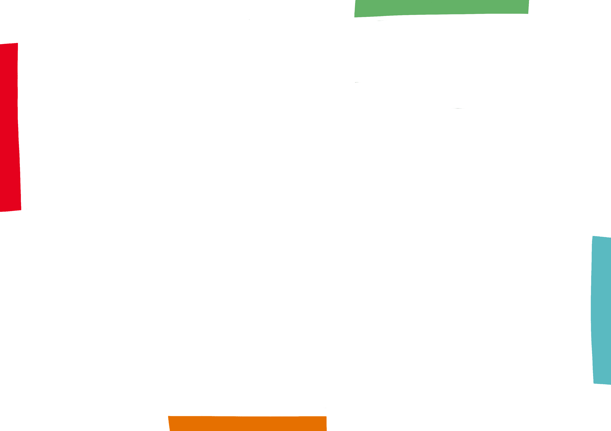

VOICI NOS EXPÉRIMENTATIONS POUR LES ANIMATIONS
Chaque ligne représente un continent, les cultures convergent vers le musée du quai Branly.
Tissage de cultures, chaque couleur représente un continent.
Autre type de tissage avec plus de lignes.
Stop motion avec des bandes de papier